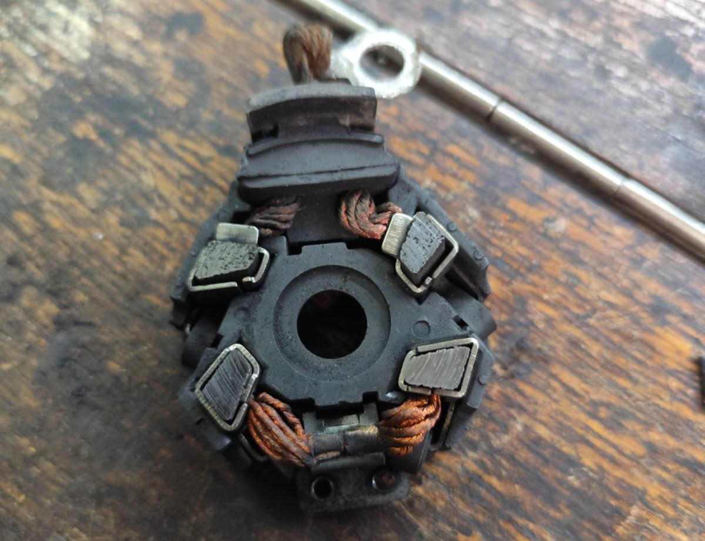

Проблемы с автоключами: самые распространённые неисправности и их ремонт

Автомобильные ключи со временем могут выходить из строя.
Причины поломок бывают разными — от износа механической части до проблем с электроникой.
Рассмотрим самые распространённые неисправности и способы их устранения.
Решение: изготовление дубликата или восстановление ключа по замку.
Решение: замена корпуса с сохранением чипа и жала ключа.
Решение: замена батарейки — простая и недорогая процедура.
Решение: перепрограммирование или установка нового чипа.
Решение: изготовление нового ключа с привязкой к системе безопасности автомобиля.
При поломке не стоит пытаться чинить ключ самостоятельно. Это может привести к ещё большим проблемам.
Чтобы быстро и качественно решить проблему с ключом, обращайтесь к мастеру по телефону: +7 (707) 799 6691
Опытный специалист поможет восстановить или изготовить новый ключ для вашего автомобиля.
Причины поломок бывают разными — от износа механической части до проблем с электроникой.
Рассмотрим самые распространённые неисправности и способы их устранения.
1. Стертые или повреждённые зубцы ключа
Механическая часть ключа изнашивается, и он перестаёт открывать замок или зажигание.Решение: изготовление дубликата или восстановление ключа по замку.
2. Поломка корпуса
Часто у складных и пластиковых ключей ломается корпус или кнопки.Решение: замена корпуса с сохранением чипа и жала ключа.
3. Разряд батарейки в брелоке
Автомобиль может перестать реагировать на кнопки.Решение: замена батарейки — простая и недорогая процедура.
4. Проблемы с чипом (иммобилайзером)
Если чип повреждён или вышел из строя, автомобиль не заведётся.Решение: перепрограммирование или установка нового чипа.
5. Потеря ключа
Самая неприятная ситуация.Решение: изготовление нового ключа с привязкой к системе безопасности автомобиля.
Вывод
Автоключи — это не только удобство, но и важная часть безопасности автомобиля.При поломке не стоит пытаться чинить ключ самостоятельно. Это может привести к ещё большим проблемам.
Чтобы быстро и качественно решить проблему с ключом, обращайтесь к мастеру по телефону: +7 (707) 799 6691
Опытный специалист поможет восстановить или изготовить новый ключ для вашего автомобиля.